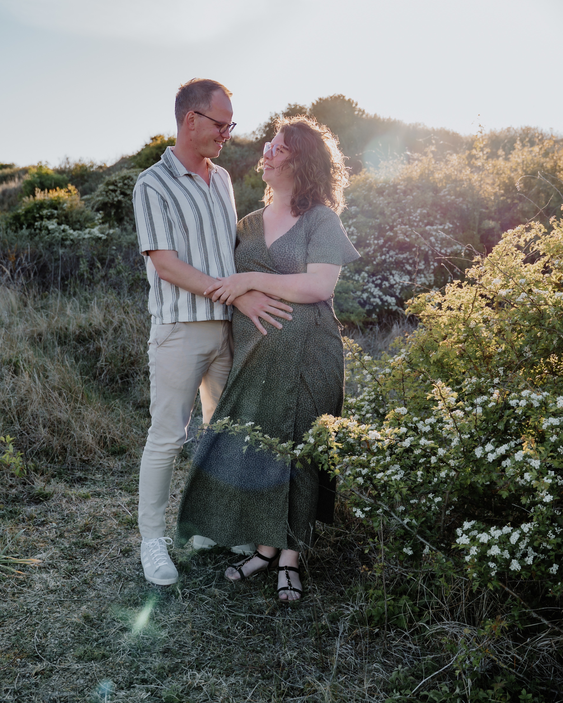
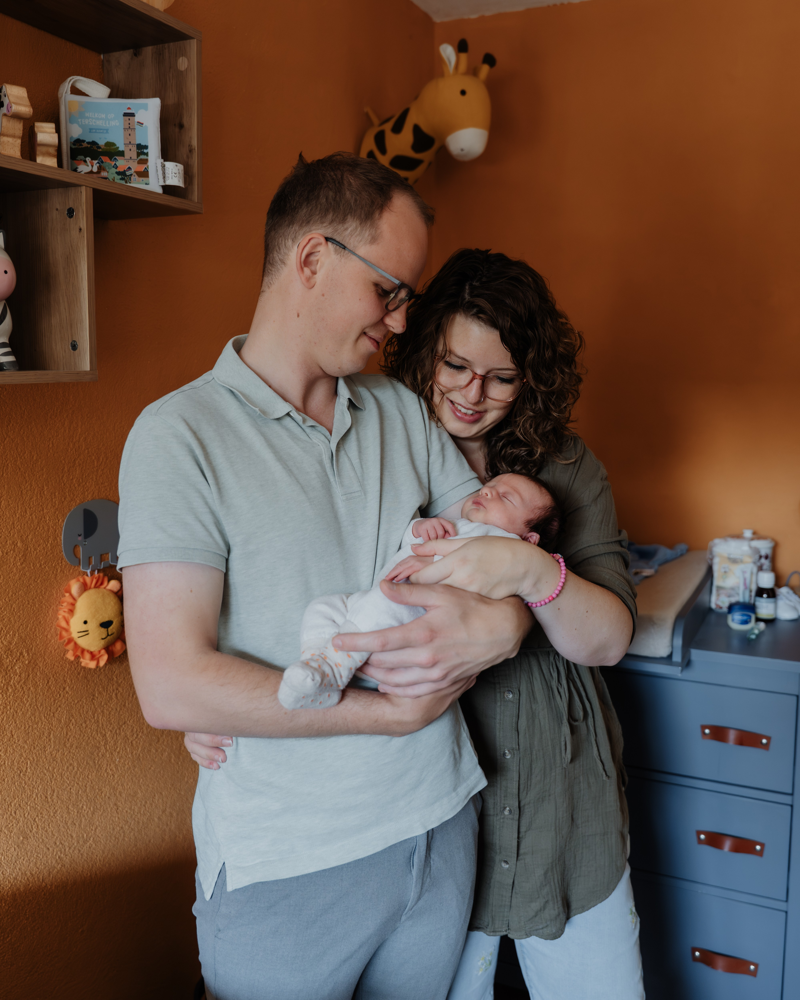

Fotogalerij
In beeld
Vervang de vlakken hieronder door jullie eigen foto's:
<img src="images/foto1.jpg" alt="..."> in plaats van
elke <div>.




Fotogalerij
Vervang de vlakken hieronder door jullie eigen foto's:
<img src="images/foto1.jpg" alt="..."> in plaats van
elke <div>.

